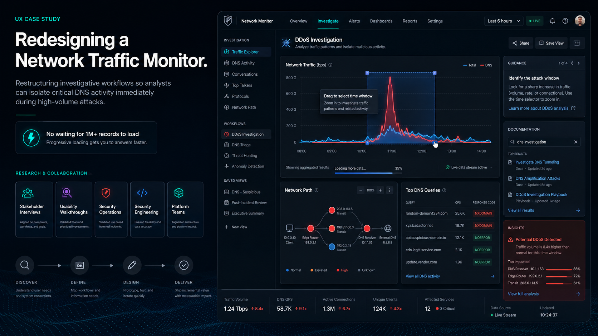

Built for the Spike
Redesigning Verisign's DNS monitoring platform — infrastructure behind .com and .net — to remain usable during high-volume security events, when it mattered most and worked least.

An internal DNS monitoring platform became slow or unusable during DDoS attacks because it attempted to load more than one million records before permitting meaningful interaction. Important capabilities were also buried within a confusing information architecture.
I redesigned the investigative workflow around progressive data loading, direct time-window selection, clearer navigation, interactive visualizations, contextual guidance, and searchable documentation.
Analysts could begin investigating immediately, isolate relevant traffic with fewer steps, and discover capabilities that had previously been hidden inside the platform.
Because this is a historical project, formal post-launch performance and adoption metrics are unavailable.
The tool broke down exactly when it was needed
The platform visualized DNS query activity, network health, firewall behavior, attack indicators, and failures across the DNS resolution path. It contained valuable operational data, but its architecture worked against the people using it. During normal traffic, the system was inconvenient. During a major security event, it could become nearly unusable.
My team noticed a significant decline in the use of one of our core internal DNS monitoring tools. The need for DNS intelligence had not declined — instead, users had begun avoiding the product because it was unreliable during high-volume events and difficult to navigate during routine investigations.
This wasn't a capacity problem. The data was all there — the architecture just surfaced it in a way that collapsed under pressure, burying signal precisely when speed mattered.
The application attempted to load the full incoming dataset before allowing analysts to investigate it. During DDoS attacks, this could mean processing more than one million records while the interface slowed down or locked up.
Users frequently needed only a narrow subset of that information — one region, host, zone, or five-minute period. The application nevertheless attempted to retrieve and display the entire dataset first.
- Performance. The whole dataset had to load before anything could be done with it.
- Discoverability. Several stakeholder requests referred to capabilities that already existed but were buried in secondary screens or unclear navigation.
How might we help security and platform teams quickly discover and isolate the most relevant DNS activity during high-volume events, without requiring the entire dataset to load first?
I conducted stakeholder interviews and usability walkthroughs with members of the Security Operations Center (SOC), security, and platform teams."
Why were users abandoning the service?
How did each team investigate DNS and network events?
Which problems were missing features, and which were performance or discoverability?
Living across four tools at once
SOC analysts had adopted several services with overlapping functionality. Our platform contained many of the capabilities they needed, but analysts did not always know those features existed or where to find them.
Each competing service made a different part of the workflow easier, so users moved between tools throughout a single investigation.
Hit hardest by the load model
The security team experienced the most severe performance problems. During major attacks, the platform attempted to load the largest possible dataset, and analysts could not begin narrowing the investigation until that process completed.
They needed the opposite workflow: select a relevant time, region, host, or zone first — then retrieve the associated records.
Requests answered, but never announced
The platform team reported similar problems but had fewer alternative tools available. They used the service in a limited capacity and had submitted numerous feature requests.
Some requests remained low in the backlog. Others had been implemented — but the team had not been notified, or could not locate the resulting feature.
One workflow, interrupted in the same place
Across the three stakeholder groups, a common investigative workflow emerged — and the platform broke it at step three.
The existing platform interrupted this workflow by loading too much data too early and by separating overview information from detailed investigation tools.
Completeness was blocking action
The system prioritized loading every available record before allowing the user to interact.
Analysts needed a small, relevant dataset immediately — not a complete dataset later.
Existing features appeared to be missing
Important capabilities were hidden behind unclear navigation, secondary screens, or unfamiliar terminology.
A feature that users cannot locate is functionally equivalent to a missing feature.
Visualizations did not support investigation
Charts and maps displayed information but provided limited ways to act on it.
Users needed to select an anomaly, region, or time period and use that selection to filter the rest of the workspace.
Documentation was disconnected from the product
Training material and feature guidance were not available where users encountered a problem.
Both new and experienced users needed contextual explanations inside the interface.
Responsive under load
The interface must remain usable when traffic volume is at its highest.
Overview first, details on demand
Begin with patterns and summaries; retrieve detailed records only when necessary.
Fast drilldown
Isolate a time period, region, host, or zone in as few actions as possible.
Visible advanced capabilities
Surface deeper tools through previews, shortcuts, search, and contextual actions.
Guidance in context
Explain unfamiliar metrics, alerts, and features at the point of use.
Every requirement had to hold during an attack — not just on a quiet Tuesday.
Reordering when data enters the interface
The ideation phase focused on restructuring both the interface and the sequence in which data entered it.
I reorganized the product around user questions rather than internal system categories.
Load everything, then investigate.
Investigate immediately, then load relevant details.
More data is fetched when the user…
- Scrolled through a record list
- Expanded a section
- Selected a time window
- Chose a host, zone, or region
- Requested additional results
Interactive visualizations
Maps, timelines, and network diagrams were treated as controls rather than static reports.
Selecting a visual element could filter the broader workspace or open a deeper investigation.
The prototypes addressed both system performance and user discoverability.
Exploratory landing page
Summary widgets previewed global traffic, security events, firewall health, hosts, zones, and network-path issues — each providing a direct route into the related workflow.
Contextual guidance
Tooltips and supporting content explained what a metric represented, why an alert mattered, what could cause a pattern, how a filter would change the dataset, and what to do next.
Searchable tools & documentation
Features, documentation, DNS terminology, and troubleshooting guidance became searchable — so users could find a capability even without knowing its official name or location.
Progressive record loading
A chunked loading model backed by a pagination API loaded only enough to fill the visible browser window, retrieving more as the user scrolled — so large datasets never blocked access to the interface.
I added drag-based selection to time-series graphs. Users could drag across a chart to define a period of interest, and the selected interval became the active filter for related records and visualizations.
A workflow that previously required entering timestamps through several controls could be completed in one direct action.
Enter start and end timestamps across several controls.
Drag across the chart. Done.
The final concept combined three levels of investigation.
Monitor
Begin with global DNS traffic, current threats, latency, firewall health, and regional activity.
Isolate
Narrow by time, region, host, zone, record type, or threat signal — directly from the chart or map.
Diagnose
Network-path views, security analysis, and detailed records locate failures, suspicious activity, and misconfiguration.
Progressive loading
Users could begin investigating before the complete dataset had been retrieved.
Direct time selection
A period of activity could be selected directly from a chart in one action.
Improved feature discovery
Advanced capabilities surfaced through previews, search, contextual navigation, and guidance.
Connected views
Selections made in one visualization defined the context for the rest of the workspace.
Performance is usability
This project demonstrated that performance and usability cannot be separated in an operational security product. The platform contained much of the functionality its users needed, but the loading model prevented access during critical events, and the information architecture concealed valuable features.
It was not adding another dashboard. It was changing when data loaded — and allowing analysts to narrow the investigation before retrieving detailed records.
What I'd do differently
If I revisited the project, I would establish clearer baseline measurements.
- Time to first usable result
- Time required to isolate a five-minute event
- Number of records loaded before interaction
- Task completion rates for common investigations
- Frequency of switching to another service
- Success rates for locating existing features
Shipping isn't the finish line
I would also pair the redesign with a stronger release and adoption process.
Addressing a request is not enough if the requesting team does not know the feature exists — a lesson the platform engineering interviews made impossible to ignore.
A monitoring platform must remain usable when the system it monitors is under the greatest stress.
ENTERPRISE CYBERSECURITY · SPRING 2016 · CONFIDENTIAL CLIENT
UX RESEARCH · INFORMATION ARCHITECTURE · INTERACTION DESIGN · DATA VISUALIZATION
CHRISTOPHER JONES